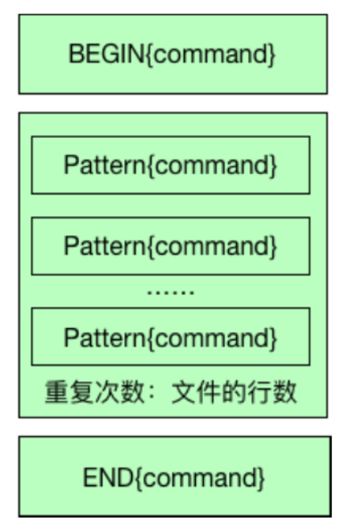
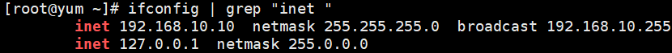
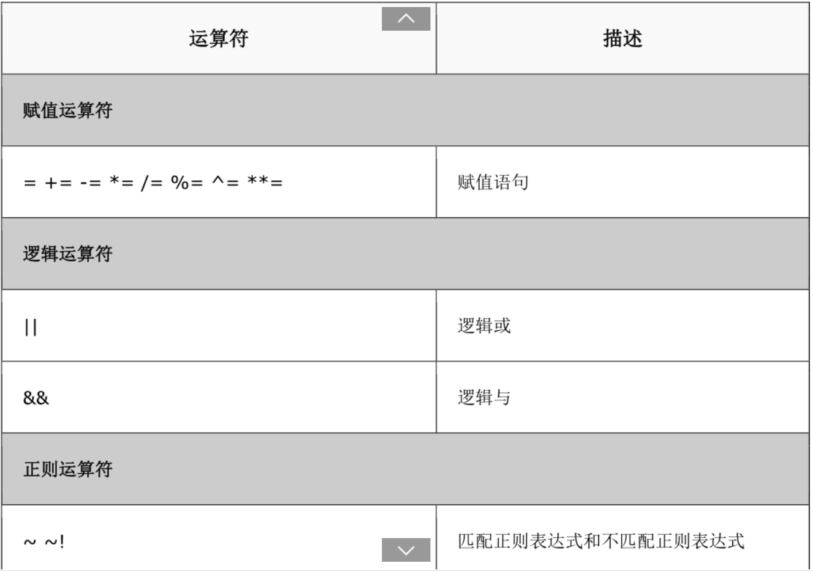
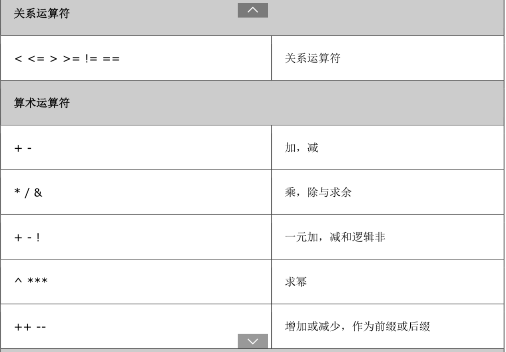
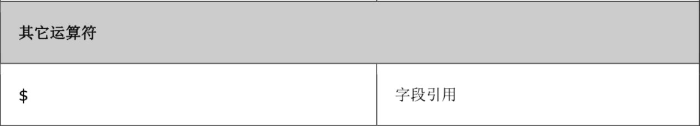
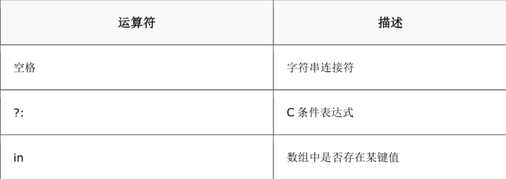
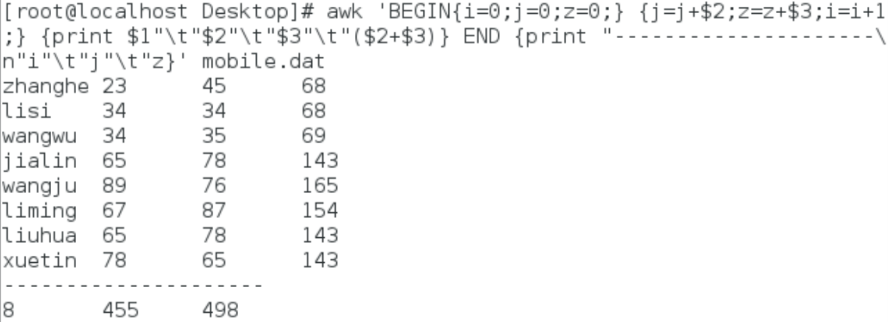
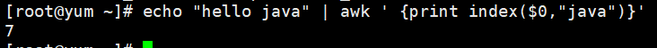

awk的使用
1、awk简介
awk是一个强大的文本分析工具，能够把文件逐行的读入，以空格为默认分隔符将每行切片，切开的部分再进行各种分析处理。
2.、使用方法
| awk 'BEGIN {command} pattern {command} END {command}' {filenames}
|
-''一定要使用单引号，single quote
- {}表示命令或者action
- BEGIN{}表示开始命令，只执行一次
- pattern 正则表达式
- command 命令
- pattern{command}按行执行，如果文件有100行，需要执行100次
- END{command}所有记录处理结束之后执行，只执行一次
- filenames 文件名
3、AWK工作流程

4、awk内置变量
| 变量名称 |
作用 |
| ARGC |
命令行参数个数 |
| ARGV |
命令行参数排列 |
| ENVIRON |
支持队列中系统环境变量的使用 |
| FILENAME |
awk浏览的文件名 |
| FNR |
浏览文件的记录数 |
| FS |
设置输入域分隔符，等价于命令行 -F选项 |
| NF |
浏览记录的域的个数 |
| NR |
已读的记录数 |
| OFS |
输出域分隔符 |
| ORS |
输出记录分隔符 |
| RS |
控制记录分隔符 |
| $0 |
变量是指整条记录。 |
| $1 |
表示当前行的第一个域 |
| ## 5、应用举例 |
|
| ### 5.1 数据文件 |
|
| zhangsan 23 45
lisi 34 34
wangwu 34 35
zhangsan1 65 78
wangwu1 89 76
lisi1 67 87
zhangsan2 65 78
lisi2 78 65
|
|
|
| ### 5.2 应用 |
|
| 1. 显示所有文件内容 |
|
| awk '{print $0}' mobile.dat
|
|
|
| 运行结果： |
|
| zhangsan 23 45
lisi 34 34
wangwu 34 35
zhangsan1 65 78
wangwu1 89 76
lisi1 67 87
zhangsan2 65 78
lisi2 78 65
|
|
|
| 2. 增加标题后，显示所有内容 |
|
| Image: 134x91 (6.0 KB) awk 'BEGIN{print "姓名\t语言\t数学"} {print $1"\t"$2"\t"$3} END{print "----------"}' mobile.dat
|
|
|
| 运行结果 |
|
| 姓名 语言 数学
zhangsan 23 45
lisi 34 34
wangwu 34 35
zhangsan1 65 78
wangwu1 89 76
lisi1 67 87
zhangsan2 65 78
lisi2 78 65
----------
|
- 增加标题，显示所有以w开头的用户信息
| Image: 134x91 (6.0 KB) awk 'BEGIN{print "姓名\t语言\t数学"} /^w/ {print $1"\t"$2"\t"$3} END{print "----------"}' mobile.dat
|
| 姓名 语言 数学
wangwu 34 35
wangwu1 89 76
----------
|
- 使用ifconfig查看网卡信息，使用awk打印出ip
运行结果：
| ens33: flags=4163<UP,BROADCAST,RUNNING,MULTICAST> mtu 1500
inet 192.168.10.10 netmask 255.255.255.0 broadcast 192.168.10.255
inet6 fe80::20c:29ff:fea6:c3fc prefixlen 64 scopeid 0x20<link>
ether 00:0c:29:a6:c3:fc txqueuelen 1000 (Ethernet)
RX packets 7032 bytes 9904015 (9.4 MiB)
RX errors 0 dropped 0 overruns 0 frame 0
TX packets 1154 bytes 92872 (90.6 KiB)
TX errors 0 dropped 0 overruns 0 carrier 0 collisions 0
lo: flags=73<UP,LOOPBACK,RUNNING> mtu 65536
inet 127.0.0.1 netmask 255.0.0.0
inet6 ::1 prefixlen 128 scopeid 0x10<host>
loop txqueuelen 1000 (Local Loopback)
RX packets 0 bytes 0 (0.0 B)
RX errors 0 dropped 0 overruns 0 frame 0
TX packets 0 bytes 0 (0.0 B)
TX errors 0 dropped 0 overruns 0 carrier 0 collisions 0
|
使用grep进行过滤
运行结果：
使用awk格式化输出
| ifconfig | grep "inet "|awk -F '[: ]+' '{print $3}'
|
说明：
- -F指定分隔符，默认分隔符为空格
- []使用中括号，可以指定多个分隔符，本例中，指定空格与
：作为分隔符。
- 可以直接使用egrep 正则表达式获取ip地址
| ifconfig | egrep -o "((2(5[0-5]|[0-4][0-9]))|[0-1]?[0-9]{1,2})(\.((2(5[0-5]|[0-4][0-9]))|[0-1]?[0-9]{1,2})){3}"
|
6、扩展（awk编程）
6.1 变量
- 在awk中可以自定义变量，
语法：
| -v 自定义变量
awk -v host=$HOSTNAME "BEGIN{print host}"
|
6. 2关系操作符
<,>,<=,>=,==,!=,~,!~ 用来判断前面的列是否匹配后面的内容，如$7~/^\/bin/{print $0} /etc/passwd
!~ 不匹配




6.3 流程控制语句
awk流程控制语句与C语言类似
- 条件
| if(expression){action1}else{action2}
|
| seq 10 |awk '{if($0%2==0){print $0"是双数"}else{print $0"是单数"}}'
|
- 循环
| while(expression){action}
|
| awk 'BEGIN{i=0;j=0;z=0;}{j=j+$2;z=z+$3;i=i+1;} {print $1"\t"$2"\t"$3"\t"($2+$3)} END{print "------\n"i"\t"j"\t"z}' mobile.dat
|
运行结果：
统计某个文件夹下的大于100k文件的数量和总和
步骤：
- 使用ls -l 获取文件夹下所有文件信息
- 使用管道符链接到awk进行处理
- 命令如下：
| ls -l|awk '{if($5>100){count++; sum+=$5}} END{print "Count:" count,"Sum: " sum}'
|
6.4awk基本函数
6.4.1 gsub
- 作用：字符串替换
- 语法：gsub(source,destination)
- 示例：把java替换为python，并输出
| echo "hello java java java" | awk 'gsub("java","python") {print $0}'
|
运行结果：
| hello python python python
|
6.4.2 index
- 作用：查找字符串pattern出现在source串中的第一次位置
- 语法：index(source,pattern)
- 示例：统计"hello java"中java出现的第一次的位置
| echo "hello java" | awk ' {print index($0,"java")}'
|
运行结果：

6.4.3 length
- 作用：获取字符串的长度
- 语法：length($1)
- 示例：统计"hello java"字符串的长度
| echo "hello java" | awk ' {print length($0)}'
|
6.4.4 match
- 作用：正则表达式匹配
- 语法：match("source","pattern"),找到返回出现的位置，未找到返回0
- 示例：统计”hello java”中，“va”出现的位置
| echo "hello java" | awk ' {print match($0,"va")}
|
6.4.5 split
- 作用：分隔字符串，返回数组的长度
- 语法：split(source,arrayname,separator）
- 示例： 统计“hello java"中以a作为分隔符
| echo "hello java" | awk ' {split($0,ar,"a")}{print ar[1]}'
|
6.4.6 sub
- 作用：第一次出现的位置进行替换
- 语法：sub(source,detination)
- 示例："hello java java java"中把java替换为python，并输出
| echo "hello java java java " | awk ' {sub("java","python")}{print $0}'
|
- 运行结果：
6.4.7 substr
- 作用：获取子串
- 语法：substr(source,start,end)
- 示例："hello java java java"中输出hello
| echo "hello java java java" | awk ' {print substr($0,1,5)}'
|
6.4.8 从shell中向awk传入字符串
| $STR="mydoc.txt"
$ echo $STR | awk '{print subst($STR, 1, 5)}'
|